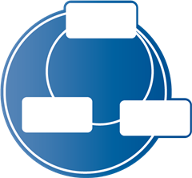

StateGoとは

StataGoは【処理フローの設計】と【プログラム実装】の両方を行う、あらゆるプログラミング言語に対応可能なビジュアルプログラミングツールです。
StateGoはプログラミングの全てをカバーする完全なビジュアルプログラミングではありません。従来のプログラミングと連携しながらプログラミングするツールです。
StateGoは極めてシンプルなソースコードへの変換を行います。それ故、ビジュアルプログラミングと従来のテキストによるプログラミングの両方の長所を使い開発を進めることが出来ます。
初心者向けのビジュアルプログラミングでは困難な複雑なロジックを、専門分野でしか利用できなかったビジュアルプログラミングを、
従来のテキストと共存できるビジュアルプログラミングだからこそ実現できるのです。
StateGoは、ビジュアルで処理の流れを設計し、同時に実装していく新しい形のプログラミング環境を提供します。
※以下は、StateGoをかみ砕いての説明になります。
処理の流れを設計する
StateGoは、『処理の流れ』を設計するツールです。フローチャートと同じように処理の過程を一ステップずつ記述します。

そのままプログラムする
処理用のボックスをステートと呼びます。ステートの中にプログラムを記述します。

変換する
ステートに格納されたプログラムはテンプレートにより再配置されて、実行可能なプログラムに変更されます。

あらゆるプログラミング言語に対応
テンプレートを変更することであらゆるプログラミング言語への適用を可能にします。
StateGoにより、ビジュアルプログラミングが可能になったプログラミング言語 :
Typescript(Anguler), Bash, C, C++, C#, C#(Unity), VBA(Excel), Javascript, Rust, ティラノスクリプト, Visaul Basic, Win-bat, Delphi, Swift, PHP